用Sideloadly安装unc0ver到iPhone中
概述：
- 下载
unc0ver的ipa文件 - 用
Sideloadly!去安装（unc0ver到iPhone中）- 图
- 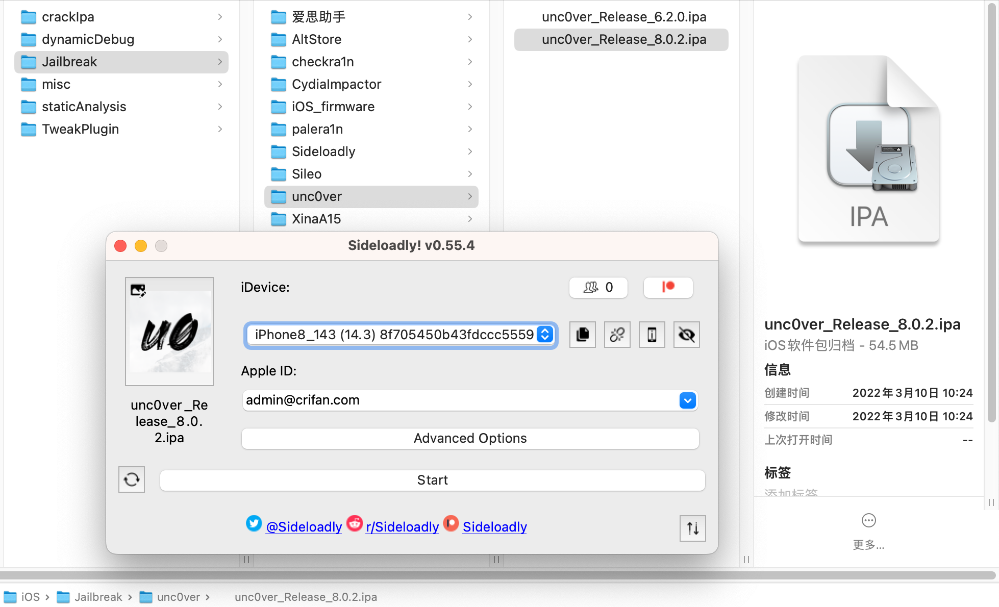
- 核心思路
- 用你给的Apple账号，去获取对应的ID，用于给unc0ver去重新签名，然后上传Upload到iPhone中，再去安装Install，即可
- 图
详解
下载unc0ver的ipa
去unc0ver的官网：
去下载unc0ver的ipa文件
目前（20241224）最新的版本是v8.0.2的：
历史版本
- v8.0.2, 2021/12/30
- v8.0.1, 2021/12/30
- v8.0.0, 2021/12/30
- v7.0.2, 2021/10/31
- v7.0.1, 2021/10/29
- v7.0.0, 2021/10/22
等等。
下载安装Sideloadly
先去官网下载：
得到：SideloadlySetup.dmg，然后双击去安装Sideloadly：
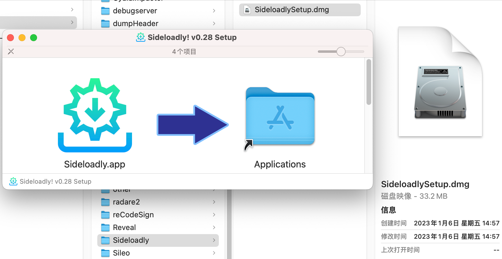
使用Sideloadly安装unc0ver到iPhone
安装后启动Sideloadly，其会自动更新到最新版本，主界面是：
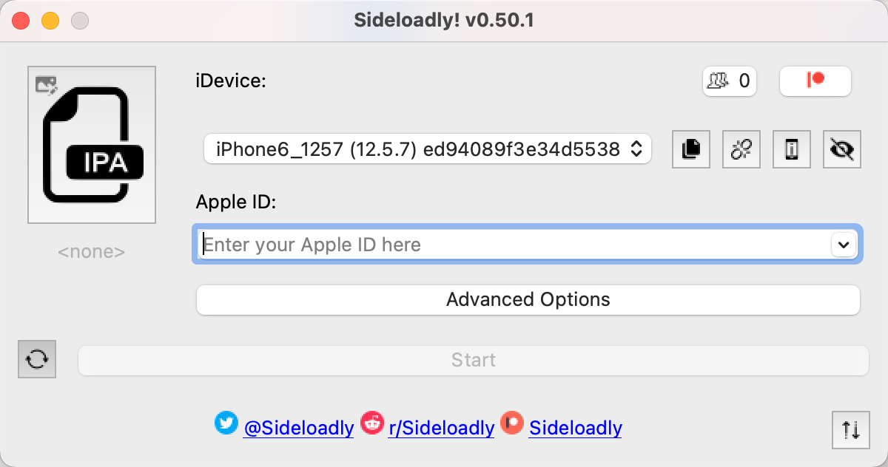
然后：
iDevice中：选择你要安装的iPhone- 如果有多个iPhone同时连接到当前Mac的话
Apple ID中：输入你的Apple账号
此时是：
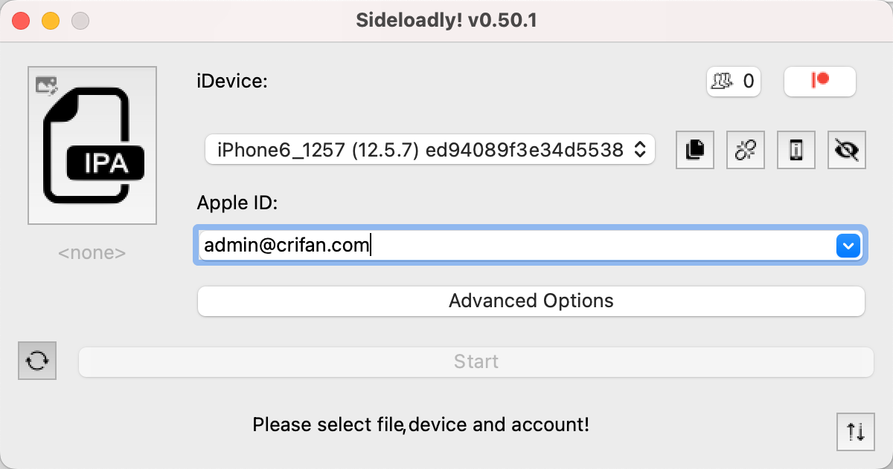
再去把之前已下载的unc0ver的ipa: unc0ver_Release_8.0.2.ipa：
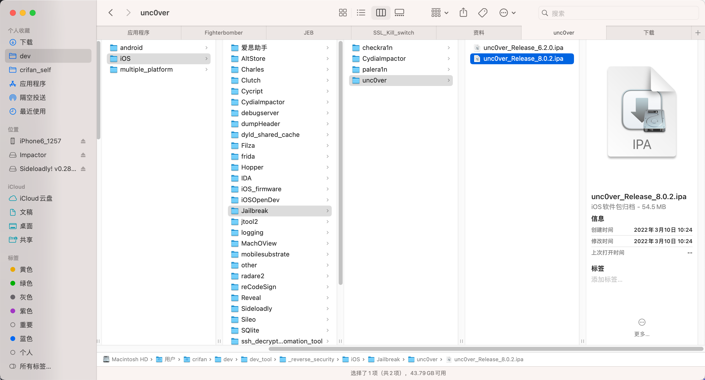

拖动到左边的IPA的图标的位置：
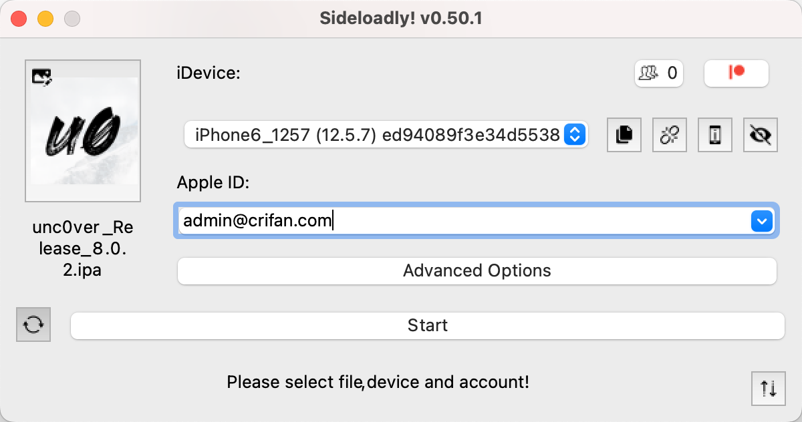
点击Start，即可开始安装的详细过程：
- Obtaining team ID
- 此时需要输入Apple账号的密码：
- 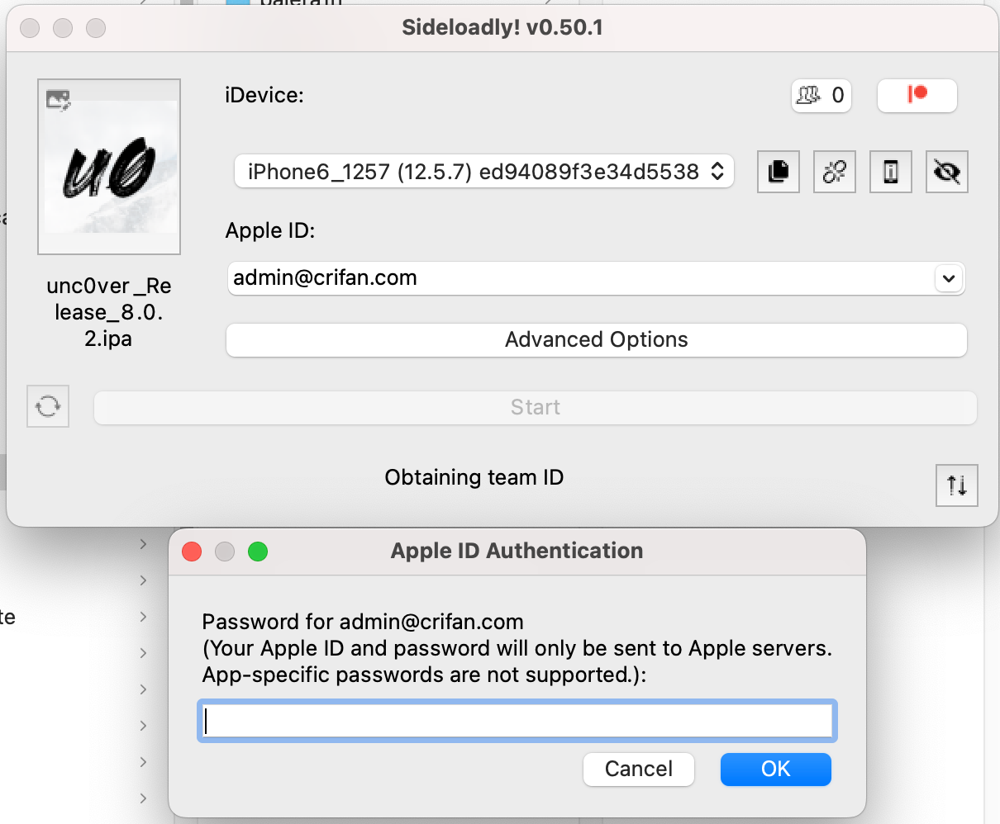
- 此时需要输入Apple账号的密码：
- Generating keypair
- Using app ID xxx with id yyy
- 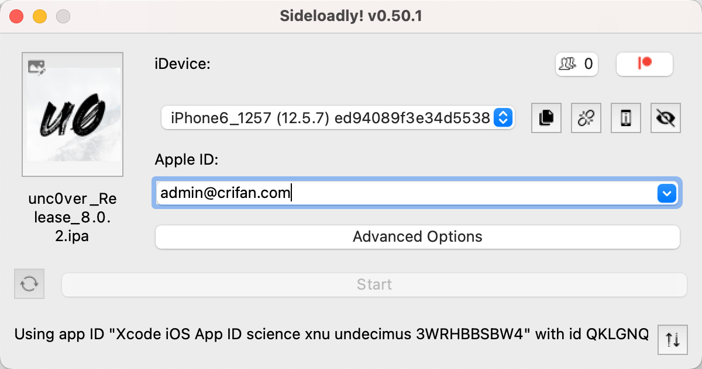
- Signing
- Uploading
- 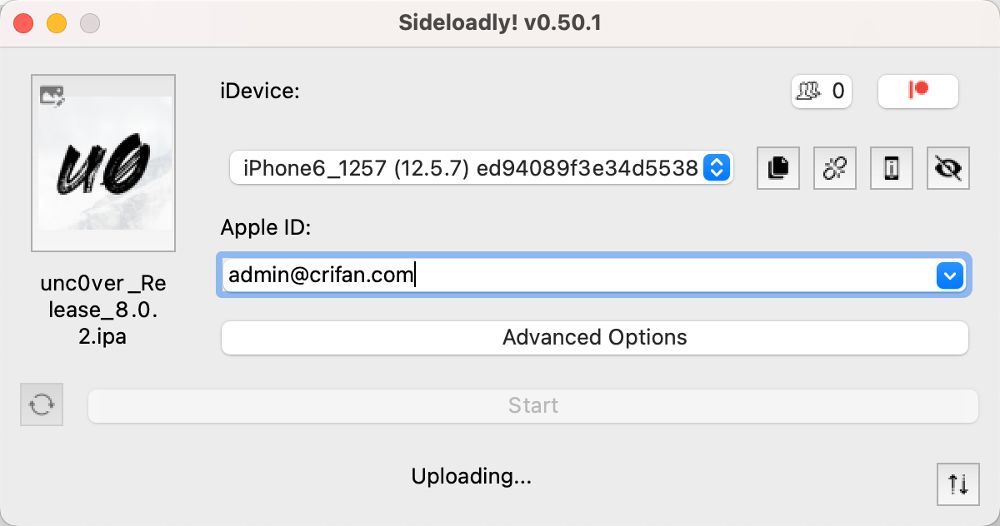
- Installing
- Installing 15%: ExtractingPackage
- 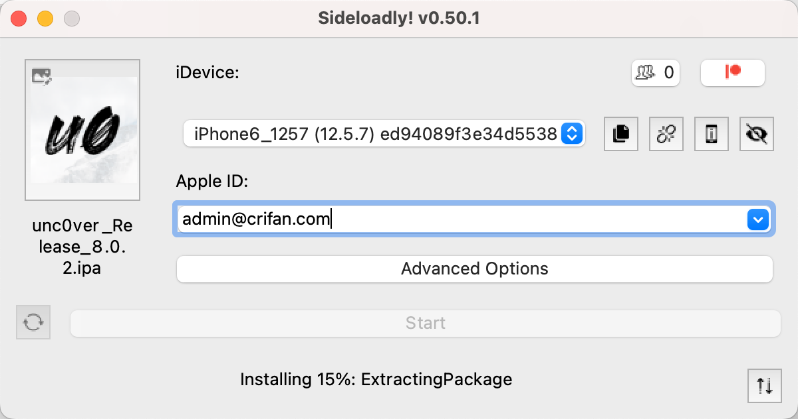
- Installing 30%: PreflightingApplication
- Installing 40%: VerifyingApplication
- Installing 100%: Complete
- 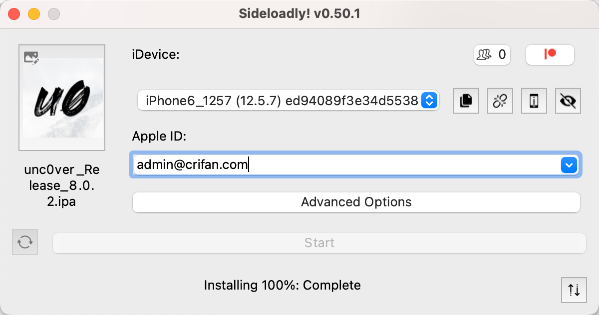
- Installing 15%: ExtractingPackage
- Done
- 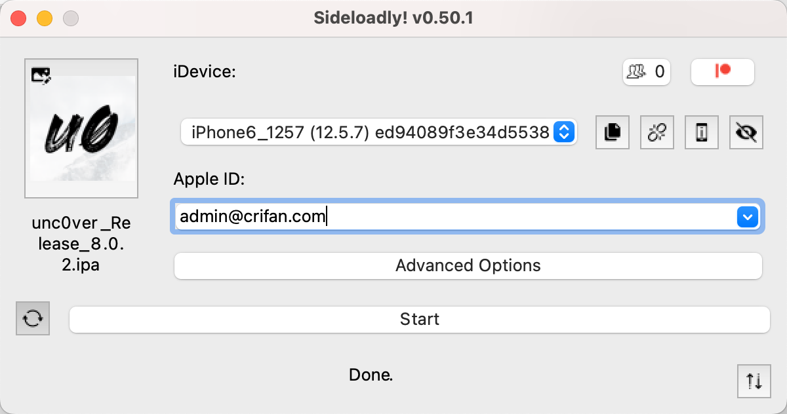
然后，iPhone6中就出现，安装好的unc0ver=桌面上可以看到unc0ver的图标了：